지적기사 (2016-03-06 기출문제)
1과목: 지적측량
1. 지적삼각점측량의 수평각 관측에서 기지각과의 차가 ±30.8" 이었다. 가장 알맞은 처리방법은?
- 공차(公差)범위를 벗어나므로 재측량 해야 한다.
- 기지점을 확인해야 한다.
- 다른 기지점을 확인해야 한다.
- 공차내이므로 계산 처리한다.
(정답률: 72%)

2. 경위의측량방법과 교회법에 따른 지적삼각 보조점의 관측 및 계산에서 적용하는 수평각의 측각공차기준으로 틀린 것은?
- 1방향각 : 50초 이내
- 1측 회의 폐색 : ±40초 이내
- 삼각형 내각관측치의 합과 180°와의 차 : ±50초 이내
- 기지각과의 차 : ±50초 이내
(정답률: 75%)
3. 최소 제곱법에서 다루는 오차는?
- 우연 오차
- 누적 오차
- 착오
- 과실
(정답률: 81%)
4. 평면직각좌표상의 점A(X1, Y1)에서 점B(X2, Y2)를 지나고 방위각이 α인 직선에 내린 수선의 길이(E)는?
- E=(Y2-Y1) sinα-(X2-X1) cosa
- E=(Y2-Y1) sinα-(X2-X1) sina
- E=(Y2-Y1) cosα-(X2-X1) cosa
- E=(Y2-Y1) cosα -(X2-X1) sina
(정답률: 59%)
5. 그림과 같이 원필지 □ABCD를 분할선 PQ로 분할 할 때 협각이 각각 α, β, γ, δ이면 성립하는 등식은?
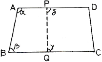
- α+β=γ+δ
- α+γ=β+δ
- α+δ=β+γ
- α+β+γ+δ=360°
(정답률: 65%)
6. 지적도를 작성할 때 사용되는 측량결과도 용지의 규격은?
- 가로 540±0.5mm, 세로 440+0.5mm
- 가로 540±1.5mm, 세로 440+1.5mm
- 가로 520±0.5mm, 세로 420+0.5mm
- 가로 520±1.5mm, 세로 420+1.5mm
(정답률: 51%)
7. 배각법에 의한 지적도근측량에서 측각오차가 -43“이고 측선장의 반수 합이 275.2일 때 65.32m인 변에 배분할 각은?
- -2“
- +2“
- -10“
- +10“
(정답률: 43%)
8. 지적삼각측량의 조정계산에서 기지내각에 맞도록 조정하는 것을 무엇이라 하는가?
- 측참조정
- 삼각조정
- 각조정
- 망조정
(정답률: 63%)
9. 다음 중 복구측량에 대한 설명으로 옳은 것은?
- 수해지역 복구를 위한 측량
- 축척변경을 위한 측량
- 지적공부 멸실 지역의 측량
- 임야 대장상 토지를 토지대장에 옳겨 등록하기 위한 측량
(정답률: 64%)
10. “1측점 둘레에 있는 모든 각의 합은 360°가 되어야 한다”는 조건은?
- 변조건
- 삼각조건
- 측점조건
- 도형조건
(정답률: 67%)
11. 삼각형의 각 변이 길이가 각각 30m, 40m, 50m일 때 이 삼각형의 면적은?
- 600m2
- 756m2
- 1000m2
- 1200m2
(정답률: 67%)
12. 지적도에 지번 및 지목을 제도할 때 글자 크기는?
- 0.5mm이상~1.0mm 이하
- 1.0mm이상~2.0mm 이하
- 2.0mm이상~3.0mm 이하
- 3.0mm이상~4.0mm 이하
(정답률: 59%)
13. 다음 중 도선법에 따른 지적도근점의 각도관측에서 방위각법에 따른 1등도선의 폐색오차는 최대 얼마 이내로 하여야 하는가? (단, n은 폐색변을 포함한 변의 수를 말한다.)
- ±√n분 이내
- ±1.5√n분 이내
- ±20√n초 이내
- ±30√n초 이내
(정답률: 61%)
14. 아래의 토지에서
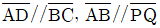
이고,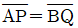
가 되도록 □ABQP의 면적(F)을 지정하는 경우,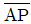
의 길이를 구하는 식으로 옳은 것은? (단, L :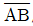
의 길이)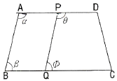
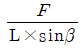
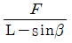
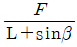
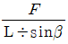
(정답률: 83%)
15. 경위의측량방법에 의한 세부측량을 실시활 때 연직각의 관측(정ㆍ반)값에 대한 허용 교차 범위에 대한 기준은?
- 90초 이내
- 1분 이내
- 3분 이내
- 5분 이내
(정답률: 67%)
16. 아래 그림과 같은 교회망에서
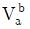
=125°이고, 관측 내각이 α=60°, γ=75°, γ‘=30°일 때 점 C에서 점 P에 대한 방위각(Vc)의 크기는 얼마인가?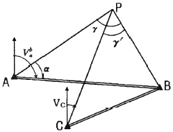
- 15°
- 20°
- 25°
- 30°
(정답률: 62%)
17. 전파기에 따른 지적삼각점의 계산시 점간거리는 어떤 거리에 의하여 계산하여야 하는가?
- 점간 실제 수평거리
- 점간 실제 경사거리
- 원점에 투영된 평면거리
- 기준면상 거리
(정답률: 63%)
18. 좌표면적계산법에 의한 면적측정시 산출면적에 대한 단위기준이 옳은 것은?
- 1만분의 1제곱미터까지 계산하여 100분의 1제곱미터 단위로 결정한다.
- 1만분의 1제곱미터까지 계산하여 10분의 1제곱미터 단위로 결정한다.
- 1천분의 1제곱미터까지 계산하여 100분의 1제곱미터 단위로 결정한다.
- 1천분의 1제곱미터까지 계산하여 10분의 1제곱미터 단위로 결정한다.
(정답률: 75%)
19. 오차타원에 의한 삼각점의 오차분석에 대한 내용으로 틀린 것은?
- 오차타원에 크기가 작을수록 정확도가 높다.
- 오차타원이 원에 가까울수록 오차의 균질성이 약하다.,
- 오차타원의 요소는 타원의 장, 단축과 회전각이다.
- 오차타원의 분산, 공분산 행렬의 계수로부터 구할 수 있다.
(정답률: 72%)
20. 다음 중 면적의 결정방법으로 옳은 것은?
- 지적도의 축척이 1/600인 지역의 면적단위는 제곱미터로 한다.
- 지적도의 축척이 1/600인 지역의 면적단위는 제곱미터 이하 한자리로 한다.
- 지적도의 축척이 1/600인 지역의 1필지의 면적이 1제곱미터 미만인 경우는 1제곱미터로 면적을 결정한다.
- 지적도의 축척이 1/600인 지역의 1필지의 면적이 0.1제곱미터 미만인 경우는 버린다.
(정답률: 54%)
2과목: 응용측량
21. 그림과 같이 측점 A의 밑에 기계를 세워 천장에 설치된 측점 A, B를 관측하였을 때 두 점의 높이차(H)는?
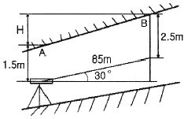
- 42.5m
- 43.5m
- 45.5m
- 46.5m
(정답률: 67%)
22. 다음 중 사진을 재촬영 해야 할 경우가 아닌 것은?
- 구름이 사진 상에 나타날 때
- 인점 사진 간에 축척이 현저한 차이가 있을 때
- 홍수로 인하여 지형을 구분할 수 없을 때
- 종중복도가 70% 정도 일 때
(정답률: 72%)
23. 지형도의 난외주기 사항에 「NJ 52-13-17-3대천」과 같이 표시되어 있을 때, NJ 52가 의미하는 것은?
- TM 도엽번호
- UTM 도엽번호
- 경위도 좌표계 구역번호
- 가우스 쿠르거 도엽번호
(정답률: 68%)
24. 사진 판독에 있어 삼림지역에서 표층토양의 함수율에 의하여 사진의 색조가 변화하는 현상은?
- 소일 마크(Soil mark)
- 왜곡 마크(Distortion mark)
- 쉐이드 마크(shade mark)
- 플로팅 마크(Floating mark)
(정답률: 73%)
25. 수준 측량의 야장 기입법 중 중간점(I.P)이 많을 때 가장 편리한 것은?
- 기고식
- 고차식
- 승강식
- 방사식
(정답률: 84%)
26. 축척 1:25000 지형도에서 등고선의 간격 10m를 묘사할 수 있는 도상 간격이 0.13mm이라 할 경우 등고선으로 표현할 수 있는 최대 경사각으로 옳은 것은?
- 약 45°
- 약 60°
- 약 72°
- 약 90°
(정답률: 45%)
27. 다음 중 지형의 표시 방법이 아닌 것은?
- 점고법
- 우모법
- 평행선법
- 등고선법
(정답률: 76%)
28. 원격탐사(Remote Sensing)의 센서에 대한 설명으로 옳지 않은 것은?
- 전자파 수집장치로 능동적 센서와 수동적 센서로 구분된다.
- 능동적 센서는 대상물에서 반사 또는 방사되는 전자파를 수집하는 센서를 의미한다.
- 수동적 센서는 선주사방식과 카메라방식이 있다.
- 능동적 센서는 Rader 방식과 Laser방식이 있다.
(정답률: 54%)
29. 노선측량의 종단면도, 횡단면도에 대한 설명으로 옳지 않은 것은?
- 일반적으로 횡단면도의 가로ㆍ세로 축척은 같게 한다.
- 일반적으로 종단면도에서 세로 축척은 가로축척보다 작게 한다.
- 종단면도에서 계획선을 정할 때 일반적으로 성토, 절토가 동일하도록 하는 것이 좋다.
- 종단면도에서 계획기울기는 제한 기울기 이내로 한다.
(정답률: 61%)
30. 원격탐사자료가 아용되는 분야의 거리가 먼 것은?
- 토지 분류 조사
- 토지 소유자 조사
- 토지이용 현황 조사
- 도로교통량의 변화 조사
(정답률: 72%)
31. 곡선의 반지름이 250m, 교각 80°20‘의 원곡선을 설치하려고 한다. 시단현에 대한 편각이 2°10’이라면 시단현의 길이는?
- 16.29m
- 17.29m
- 17.45m
- 18.91m
(정답률: 53%)
32. 완화곡선에 대한 설명 중 잘못된 것은?
- 완화곡선의 반지름은 시점에서 원의 반지름부터 시작하여 점차 증가하여 무한대가 된다.
- 우리나라에서는 주로 도로에서는 완화곡선에 클로소이드 곡선을, 철도에서는 3차 포물선을 사용한다.
- 완화곡선의 접선은 시점에서 직선에 접하고 종점에서 원호에 접한다.
- 완화곡선에 연한 곡선 반지름의 감소율은 캔트의 증가율과 같다.
(정답률: 66%)
33. 도로의 중심선을 따라 20m 간격의 종단측량을 하여 다음과 같은 결과를 얻었다. 측점 1과 측점 5의 지반고를 연결하여 도로계획선을 설정한다면 이 계획선의 경사는?
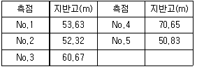
- +3.5%
- +2.8%
- -2.8%
- -3.5%
(정답률: 58%)
34. 지하시설물 관측방법에서 원래 누수를 찾기 위한 기술로 수도관로 중 PVC 또는 플라스틱 관을 찾는데 이용되는 관측방법은?
- 전기관측법
- 자장관측법
- 음파관측법
- 자기관측법
(정답률: 78%)
35. 키 1.6m인 사람이 해안선에서 해상을 바라볼 수 있는 거리는? (단, 지구의 곡률 반지름은 6370km이다.)
- 1600m
- 2257m
- 3200m
- 4515m
(정답률: 44%)
36. 수준 측량 작업에서 전시와 후시의 거리를 같게 하여 소거되는 오차와 거리가 먼 것은?
- 기차의 영향
- 레벨 조정 불완전에 의한 기계오차
- 지표면의 구차의 영향
- 표척의 영점 오차
(정답률: 50%)
37. 카메라의 초점거리 153mm,촬영경사 7°로 평지를 촬영한 사진이 있다. 이 사진의 등각점은 주점으로부터 최대경사선 상의 몇 mm인 곳에 위치하는가?
- 9.36mm
- 10.63mm
- 12.36mm
- 13.63mm
(정답률: 34%)
38. 실체사진 위에서 이동한 물체를 실체시 하면, 그 운동 때문에 그 물체가 겉보기 상의 시차가 발생하고, 그 운동이 기선방향이면 물체가 뜨거나 가라앉아 보이는 효과는?
- 카메론 효과(cameron effect)
- 가르시아 효과(garcia effect)
- 고립효과(isolated effect)
- 상위 효과(discrepancy effect)
(정답률: 83%)
39. GPS에서 단일차 분해(single difference solution)를 얻을 수 있는 경우는?
- 두 개의 수신기가 시간 간격을 두고 각각의 위성을 관측하는 경우
- 두 개의 수신기가 동일한 순간 동안 각각의 위성을 관측하는 경우
- 두 개의 수신기가 동일한 순간 동안 동일한 위성을 관측하는 경우
- 한 개의 수신기가 한순간에 한 개의 위성만 관측하는 경우
(정답률: 60%)
40. 지표에서 거리 1000m 떨어진 A, B 두개의 수직터널에 의하여 터널 내외의 연결측량을 하는 경우 수직터널의깊이가 1500m라 할 때, 두 수직터널 간 거리의 지표와 지하에서의 차이는? (단, 지구반지름 R=6370km)
- 15cm
- 24cm
- 48cm
- 52cm
(정답률: 53%)
3과목: 토지정보체계론
41. 자동 벡터화에 대한 설명으로 틀린 것은?
- 래스터자료를 소프트웨어에 의해 벡터화 하는 것이다.
- 경우에 따라 수동 디지타이징보다 결과가 나쁠 수 있다.
- 자동 벡터화 후에 처리결과를 확인할 필요가 있다.
- 위상구조화 작업도 신속하게 이루어진다.
(정답률: 53%)
42. 오차의 발생 원인에 대한 설명 중 틀린 것은?
- 자료입력을 수동으로 하는 것도 오차 유발의 원인이 된다.
- 원자료의 오차는 자료기반에 거의 포함되지 않는다.
- 여러 가지의 자료층을 처리하는 과정에서 오차가 발생한다.
- 지역을 지도화 하는 과정에서 선으로 표현할 때 오차가 발생한다.
(정답률: 82%)
43. 다음 중 래스터데이터의 저장형식에 해당하지 않는 것은?
- BMP
- JPG
- TIFF
- DXF
(정답률: 72%)
44. 래스터데이터의 단점으로 볼 수 없는 것은?
- 해상도를 높이면 자료의 양이 크게 늘어난다.
- 객체단위로 선택하거나 자료의 이동, 삭제, 입력 등 편집이 어렵다.
- 위상구조를 부여하지 못하므로 공간적 관계를 다루는 분석이 불가능하다.
- 중첩기능을 수행하기가 불편하다.
(정답률: 73%)
45. 데이터베이스관리시스템(DBMS)의 단점이 아닌 것은?
- 시스템 구성이 복잡
- 데이터의 중복성 발생
- 통제의 집중화에 따른 위험 존재
- 초기 구축비용과 유지비용이 고가
(정답률: 56%)
46. 다음 중 사용자권한 등록파일에 등록하는 사용자의 권한에 해당하지 않는 것은?
- 지적전산코드의 입력ㆍ수정 및 삭제
- 토지등급 및 기준수확량등급 변동의 관리
- 개별공지시가의 변동 관리
- 기업별 토지소유현황의 조회
(정답률: 56%)
47. 노랑머리를 가진 새가 서식하는 특정한 식생이 있는지를 파악하기 위해서는 어떤 중첩기법을 써야 하는가?
- 점과 폴리곤
- 선과 선
- 선과 폴리곤
- 폴리곤과 폴리곤
(정답률: 77%)
48. 데이터베이스 관리용으로 사용되는 소프트웨어는?
- Oracle
- ERDAS Imagine
- SPSS
- ArcGIS
(정답률: 72%)
49. 다음 중 서로 다른 체계들 간의 자료 공유를 위한 공간 자료교환 표준으로 대표적인 것은?
- CEN/TC 287
- SDTS
- DX-90
- Z39-50
(정답률: 74%)
50. 공간보간법에서 지형의 기복이 심하지 않는 표면을 생성하는데 적합한 방법은?
- 국지적 보간법
- 전역적 보간법
- 정밀 보간법
- Spline 보간법
(정답률: 50%)
51. 지적전산자료의이용에 관한 설명으로 옳은 것은?
- 시ㆍ군ㆍ구 단위의 지적전산자료를 이용하고자 하는 자는 지적소관청 또는 도지사의 승인을 얻어야 한다.
- 시ㆍ도 단위의 지적전산자료를 이용하고자 하는 자는 시ㆍ도지사 또는 행정자치부장관의 승인을 얻어야 한다.
- 전국 단위의 지적전산자료를 이용하고자 하는 자는 국토교통부장관, 시ㆍ도지사 또는 지적소관청의 승인을 얻어야 한다.
- 심사 및 승인을 거쳐 지적전산자료를 이용하는 모든 자는 사용료를 면제한다.
(정답률: 60%)
52. 과거 지적재조사 사업의 추진방향이 아닌 것은?
- 지목화 단순화
- 축척구분의 단순화
- 지적도와 임야도의 통합
- 토지대장과 임야대장의 통합
(정답률: 43%)
53. 토지 및 지리정보시스템의 일반적인 데이터 형태로 옳은 것은?
- 공간데이터와 속성데이터
- 속성데이터와 내성데이터
- 내성데이터와 위상데이터
- 위상데이터와 라벨데이터
(정답률: 80%)
54. 지적공부의 등록사항 중에서 토지소유자에 관한 사항에 잘못이 있어 등록사항을 정정하는 경우 확인 자료에 해당되지 않는 것은?
- 등기필증
- 등기완료통지서
- 토지대장 및 매매계약서
- 등기관서에서 제공한 등기전산 정보자료
(정답률: 55%)
55. 다음 중 런랭스(Run-length) 코드 압축 방법에 대한 설명이 아닌 것은?
- 동일한 속성값을 개별적으로 저장하는 대신 하나의 런(run)에 해당하는 속성값이 한 번만 저장된다.
- Quadtree방법과 함께 많이 쓰이는 격자자료압축방법이다.
- 런(run)은 하나의 행에서 동일한 속성값을 갖는 격자를 의미한다.
- 대상지역에 해당하는 격자들의 연속적인 연결상태를 파악하여 압축하는 방법이다.
(정답률: 48%)
56. 디지타이징 및 벡터편집의 오류에서 중복되어 있는 점, 선을 제거함으로써 수정할 수 있는 방법은?
- 언더슈트(undershoot)
- 오버슈트(overshoot)
- 슬리버 폴리곤(sliver polygon)
- 오버래핑(overlapping)
(정답률: 61%)
57. 필지중심토지정보시스템(PBLIS)의 구성에 해당하지 않는 것은?
- 지적공부관리시스템
- 지적측량성과시스템
- 부동산등기관리시스템
- 지적측량시스템
(정답률: 67%)
58. 데이터베이스의 일반적인 모형과 거리가 먼 것은?
- 입체형(solid)
- 계급형(hierarchical)
- 관망형(network)
- 관계형(relational)
(정답률: 69%)
59. 벡터데이터의 특성이 아닌 것은?
- 래스터데이터에 비해 데이터가 압축되고 검색이 빠르다.
- 각기 다른 위상구조로 중첩기능을 수행하기 어렵다.
- 격자간격에 의존하여 면으로 표현된다.
- 자료의 갱신과 유지관리가 편리하다.
(정답률: 71%)
60. 과거 건설교통부의 토지 관련 업무를 다루는 시스템과 행정자치부의 지적 관련 업무 처리 시스템이 분리되어 운영됨에 따른 자료의 이중관리 및 정확성 문제 등을 해결하기 위하여 구축된 통합정보시스템은?
- KLIS
- LMIS
- PBLIS
- SGIS
(정답률: 73%)
4과목: 지적학
61. 다음 중 현대지적의 원리와 거리가 먼 것은?
- 민주성의 원리
- 정확성의 원리
- 능률성의 원리
- 경제성의 원리
(정답률: 56%)
62. 다음 중 조선시대의 경국대전에 명시된 토지 등록제도는?
- 공전제도
- 사전제도
- 정전제도
- 양전제도
(정답률: 71%)
63. 현재 우리나라에서 채택하고 있는 지목제도는?
- 용도지목
- 복식지목
- 토질지목
- 지형지목
(정답률: 87%)
64. 현행 임야대장에 토지를 등록하는 순서로 가장 옳은 것은?
- 지번 순으로 한다.
- 면적이 큰 순으로 한다.
- 소유자 성(姓)의 가, 나, 다 순으로 한다.
- 공간정보의 구축 및 관리 등에 관한 법률에 규정된 지목의 순으로 한다.
(정답률: 78%)
65. 역둔토실지조사를 실시할 경우 조사 내용에 해당되지 않는 것은?
- 지번ㆍ지목
- 면적ㆍ사표
- 등급 및 결정소작료
- 경계 및 조사자 성명
(정답률: 50%)
66. 간주지적도에 등록하는 토지대장의 명칭이 아닌 것은?
- 산 토지대장
- 을호 토지대장
- 민유 토지대장
- 별책 토지대장
(정답률: 70%)
67. 다음 중 경계점좌표등록부를 작성하여야 할 곳은?
- 국토의 계획 및 이용에 관한 법률상의 도시지역
- 임야도시행지구
- 도시개발사업을 지적확정측량으로 한 지역
- 측판측량방법으로 한 농지구획정리지구
(정답률: 63%)
68. 지적제도의 특징으로 가장 거리가 먼 것은?
- 안정성
- 적응성
- 간편성
- 정확성
(정답률: 74%)
69. 법지적 제도와 거리가 가장 먼 것은?
- 정밀한대축척 지적도 작성
- 토지의 사용, 수익, 처분권 인정
- 토지의 상품화
- 토지자원의 배분
(정답률: 45%)
70. 토지의 특정성(特定性)을 살려 다른 토지와 분명히 구별하기 위한 토지표시 방법은?
- 지목을 구분하는 것
- 지번을 붙이는 것
- 면적을 정하는 것
- 토지의 등급을 정하는 것
(정답률: 66%)
71. 토지에 대한 물권을 설정하기 위하여 지적제도가 담당해야 할 가장 중요한 역할은 무엇인가?
- 소유권 사정
- 필지의 획정
- 지번의 설정
- 면적의 측정
(정답률: 63%)
72. 토지조사사업 당시 사정에 대한 재결기관은?
- 지방토지조사위원회
- 도지사
- 임시토지조사국장
- 고등토지조사위원회
(정답률: 75%)
73. 다음 중 1필지의 성립요건에 해당되지 않은 것은?
- 지번설정지역이 같을 것
- 지목이 같을 것
- 소유자가 같을 것
- 기등기된 토지일 것
(정답률: 61%)
74. 지적의 발생설 중 영토의 보존과 통치수단이라는 두 관점에 대한 이론은?
- 지배설
- 치수설
- 침략설
- 과세설
(정답률: 72%)
75. 다음 중 토지등록제도의 장점으로 보기 어려운 것은?
- 사인간의 토지거래에 있어서 용이성과 경비절감을 기할 수 있다.
- 토지에 대한 장기신용에 의한 안정성을 확보할 수 있다.
- 지적과 등기에 공신력이 인정되고, 측량성과의 정확도가 향상될 수 있다.
- 토지분쟁의 해결을 위한 개인의 경비측면이나, 시간적 절감을 가져오고 소송사건이 감소될 수 있다.
(정답률: 63%)
76. 토지조사사업 당시 험조장의 위치를 선정할 때 고려사항이 아닌 것은?
- 유수 및 풍향
- 해저의 깊이
- 선착장의 편리성
- 조류의 속도
(정답률: 75%)
77. 토지조사사업 당시 확정된 소유자가 다른 토지사이에 사정된 경계선을 무엇이라 하였는가?
- 지계선
- 강계선
- 구획선
- 지역선
(정답률: 70%)
78. 지적업무가 재무부에서 내무부로 이관되었던 년도로 옳은 것은?
- 1950년
- 1960년
- 1962년
- 1975년
(정답률: 55%)
79. 토지 등록의 목적과 관계가 가장 적은 것은?
- 토지의 현황 파악
- 토지의 수량 조사
- 토지의 권리 상태 공시
- 토지의 과실 기록
(정답률: 71%)
80. 토지조사사업의 목적과 가장 거리가 먼 것은?
- 토지소유의 증명제도 확립
- 토지소유의 합리화
- 국토개발계획의 수립
- 토지의 면적 단위 통일
(정답률: 51%)
5과목: 지적관계법규
81. 다음 축척변경에 관한 설명의 ()안에 적합한 것은?
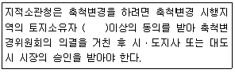
- 4분의 1
- 3분의 1
- 3분의 2
- 2분의 1
(정답률: 71%)
82. 다음 중 축척변경에 관한 측량에 따른 청산금의 산정에 대한 설명으로 옳지 않은 것은?
- 지적소관청은 축척변경에 관한 측량을 한 결과 측량 전에 비하여 면적의 증감이 있는 경우에는 그 증감면적에 대하여 청산을 하여야 한다.
- 청산을 할 때에는 축척변경위원회의 의결을 거쳐 지번별로 제곱미터당 금액을 정하여야 한다.
- 청산금은 축척변경 지번별 조서의 필지별 증감면적에 지번별 제곱미터당 금액을 곱하여 산정한다.
- 지적소관청은 청산금을 지급받을 자가 청산금을 받기를 거부할 때에는 그 청산금을 공탁할 수 없다.
(정답률: 70%)
83. 토지의 지목을 구분하는 경우 “임야”에 대한 설명 중 ()안에 해당하지 않는 것은?
- 수림지(樹林地)
- 죽림지
- 간석지
- 모래땅
(정답률: 58%)
84. 국토의 계획 및 이용에 관한 법률 시행령상 개발행위허가기준에 따른 분할제한면적 미만으로 토지 분할하는 경우에 해당하지 않는 것은?
- 사설도로를 개설하기 위한 분말
- 녹지지역 안에서의 기존묘지의 분할
- 사도법에 의한 사도개설허가를 받아서 하는 분할
- 사설도로로 사용되고 있는 토지 중 도로로서의 용도가 폐지되는 부분을 인접토지와 합병하기 위하여 하는 분할
(정답률: 38%)
85. 공간정보의 구축 및 관리 등에 관한 법률에서 300만원 이하의 과태료의 대상이 아닌 것은?
- 고시된 측량성과에 어긋나는 측량성과를 사용한 자
- 수로조사를 하지 아니한 자
- 정당한 사유 없이 측량을 방해한 자
- 고의로 측량성과를 사실과 다르게 한 자
(정답률: 67%)
86. 다음 중 토지의 합병을 신청할 수 있는 경우는?
- 합병하려는 토지의 지적도 및 임야도의 축척이 서로 다른 경우
- 합병하려는 토지가 등기된 토지와 등기되지 아니한 토지인 경우
- 합병하려는 토지의 소유자별 공유지분이 다르거나 소유자의 주소가 서로 다른 경우
- 합병하려는 각 필지의 지목은 같으나 일부 토지의 용도가 다르게 되어 합병신청과 동시에 토지의 용도에 따라 분할신청을 하는 경우
(정답률: 73%)
87. 다음 중 공익사업을 위한 토지 등의 취득 및 보상에 관한 법률을 적용하여야 하는 경우는?
- 국토교통부장관이 기본측량을 실시하기 위하여 토지를 사용함에 따른 손실보상에 관한 경우
- 지적소관청이 측량을 방해하는 장애물을 제거하는 경우
- 축척변경위원회가 축척변경에 따른 청산금을 산정하는 경우
- 지적측량수행자가 측량성과를 검사하기 위하여 타인의 토지에 출입하는 경우
(정답률: 46%)
88. 다음 중 지적도ㆍ임야도ㆍ경계점좌표등록부에 공통으로 등록되는 사항으로만 나열된 것은?
- 토지의 소재, 지목
- 토지의 소재, 지번
- 도면의 제명, 경계
- 지적도면의 번호, 지목
(정답률: 68%)
89. 지적소관청이 지적공부의 등록사항에 잘못이 있음을 발견한 때 직권으로 조사ㆍ측량하여 정정할 수 있는 경우로 옳지 않은 것은?
- 지적측량성과와 다르게 정리된 경우
- 토지이동정리 결의서의 내용과 다르게 정리된 경우
- 지적공부의 작성 또는 재작성 당시 잘못 정리된 경우
- 임야도에 등록된 필지의 경계가 잘못되어 면적이 감소된 경우
(정답률: 66%)
90. 도시관리계획 결정으로 도시자연공원구역을 지정하는 자는?
- 시장ㆍ군수
- 시ㆍ도지사
- 국토교통부장관
- 국립공원관리공단 이사장
(정답률: 63%)
91. 등기의 말소를 신청하는 경우 그 말소에 대하여 등기사 ㅇ이해관계가 있는 제3자가 있을 때 필요한 것은?
- 제3자의 승낙
- 시장의 서면
- 공동감보목록원부
- 가등기 명의인의 승낙
(정답률: 73%)
92. 다음 중 승소한 등기권리자 또는 등기의무자가 단독으로 신청하는 등기는?
- 소유권보존등기
- 교환에 의한 등기
- 판결에 의한 등기
- 신탁재산에 속하는 부동산의 신탁등기
(정답률: 57%)
93. 지적소관청으로부터 측량성과에 대한 검사를 받지 않아도 되는 것만을 옳게 나열한 것은?
- 지적기준점측량, 분할측량
- 지적공부복구측량, 축척변경측량
- 경계복원측량, 지적현황측량
- 신규등록측량, 등록전환측량
(정답률: 72%)
94. 지적소관청이 직권으로 지적공부에 등록된 사항을 정정할 수 없는 경우는?
- 지적측량성과와 다르게 정리된 경우
- 토지이동정리 결의서의 내용과 다르게 정리된 경우
- 지적공부의 작성 또는 재작성 당시 잘못 정리된 경우
- 지적도에 등록된 필지가 면적의 증감이 있으며 경계 위치기 잘못된 경우
(정답률: 63%)
95. 다음 중 국토의 계획 및 이용에 관한 법률에 따른 용도지역에 대한 설명으로 옳지 않은 것은?
- 도시지역은 인구와 산업이 밀집되어 있거나 밀집이 예상되어 그 지역에 대하여 체게적인 개발ㆍ정비ㆍ관리ㆍ보전 등이 필요한 지역을 말한다.
- 관리지역은 도시지역의 인구와 산업을 수용하기 위하여 도시지역에 준하여 체계적으로 관리하거나 농림업의 진흥, 자연환경 또는 산림의 보전을 위하여 농림지역 또는 자연환경보전지역에 준하여 관리할 필요가 있는 지역을 말한다
- 농림지역은 도시지역에 속하지 아니하는 「농지법」에 따른 농업진흥지역 또는 「산지관리법」에 따른 보전산지 등으로서 농림업을 진흥시키고 산림을 보전하기 위하여 필요한 지역을 말한다.
- 자연녹지보전지역은 자연환경ㆍ수자원ㆍ해안ㆍ생태계ㆍ상수원 및 문화재의 보전과 수산자원의 보호ㆍ육성 등을 위하여 필요한 지역을 말한다.
(정답률: 57%)
96. 다음 중 중앙지적위원회에 대한 설명으로 옳지 않은 것은?
- 위원장 및 부위원장을 포함한 임원의 임기는 2년이다.
- 위원장은 국토교통부의 지적업무 담당 국장이 된다.
- 위원은 지적에 관한 학식과 경험이 풍부한 사람 중에서 국토교통부장관이 임명하거나 위촉한다.
- 위원장 1명과 부위원장 1명을 포함하여 명 이상 10명 이하의 위원으로 구성한다.
(정답률: 54%)
97. 지적측량수행자가 지적측량을 함에 있어서 고의 또는 과실로 인한 손해배상책임을 보장하기 위하여 보증보험에 가입하여야 하는 보증금액기준이 맞는 것은? (단, 지적측량업자의 경우 보장기간이 10년 이상이다.)
- 지적측량업자:1억원 이상
- 지적측량업자:5억원 이상
- 한국국토정보공사:10억원 이상
- 한국국토정보공사:30억원 이상
(정답률: 71%)
98. 토지대장에 등록하는 토지가 「부동산등기법」에 따라 대지권 등기가 되어 있는 경우 대지권 등록부에 등록하여야 할 사항에 해당하지 않는 것은?
- 토지의 소재
- 지번
- 대지권 비율
- 도곽선 수치
(정답률: 71%)
99. 토지소유자는 「주택법」에 따른 공동주택의 부지, 도로, 제방, 하천, 구거, 유지, 그 밖에 대통령령으로 정하는 토지로서 합병하여야 할 토지가 있으면 그 사유가 발생한 날부터 최대 얼마 이내에 지적소관청에 합병을 신청하여야 하는가?
- 30일
- 50일
- 60일
- 90일
(정답률: 79%)
100. 부동산등기법상 미등기의 토지에 관한 소유권보존등기를 신청할 수 없는 자는?
- 토지대장에 최초의 소유자로 등록되어 있는 자
- 확정판결에 의하여 자기의 소유권을 증명하는 자
- 수용(收用)으로 인하여 소유권을 취득하였음을 증명하는 자
- 특별자치도지사, 시장, 군수 또는 구청장의 확인에 의하여 토지의 자기 소유권을 증명하는 자
(정답률: 63%)